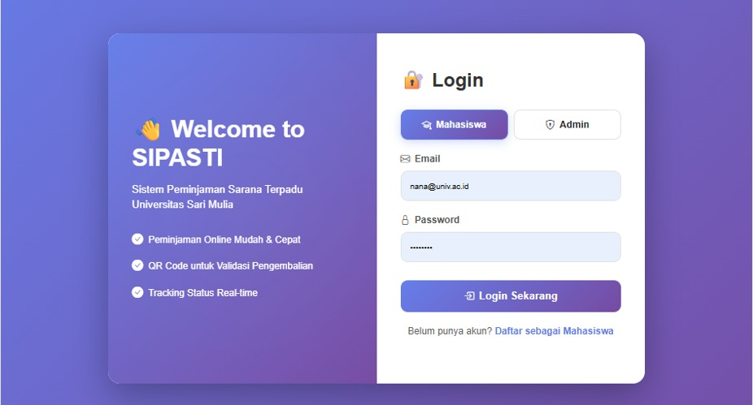

Sistem Peminjaman Sarana Terpadu berbasis web yang membantu pengelolaan inventaris, peminjaman, pengembalian, monitoring, dan pelaporan secara digital.

SIPASTI merupakan aplikasi web yang dirancang untuk membantu pengelolaan sarana dan prasarana kampus secara digital.
Sistem menyediakan proses pengajuan peminjaman, validasi admin, QR Code, monitoring aktivitas, serta laporan transaksi secara realtime.
Sistem login untuk admin dan mahasiswa.
Pengelolaan data sarana dan prasarana kampus.
Validasi peminjaman dan pengembalian menggunakan QR Code.
Mahasiswa dapat mengajukan peminjaman secara online.
Monitoring status peminjaman secara realtime.
Pembuatan laporan inventaris dan transaksi otomatis.